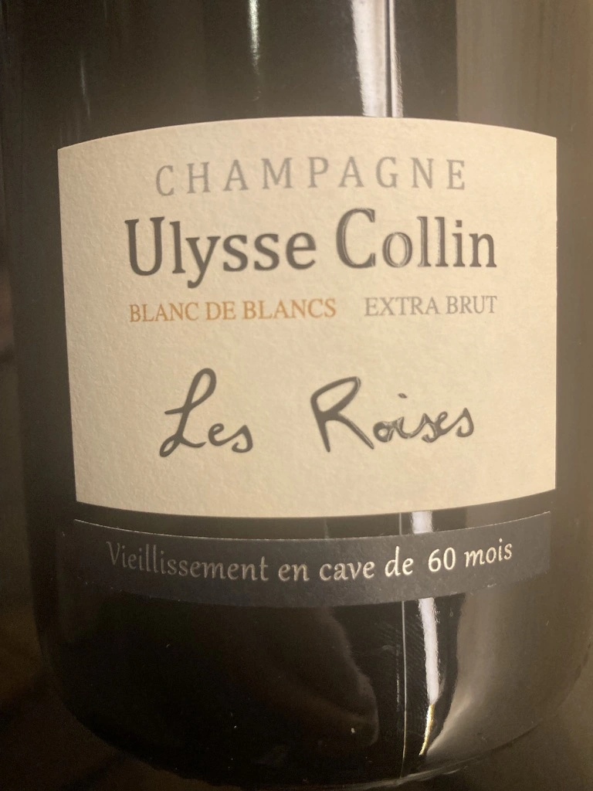
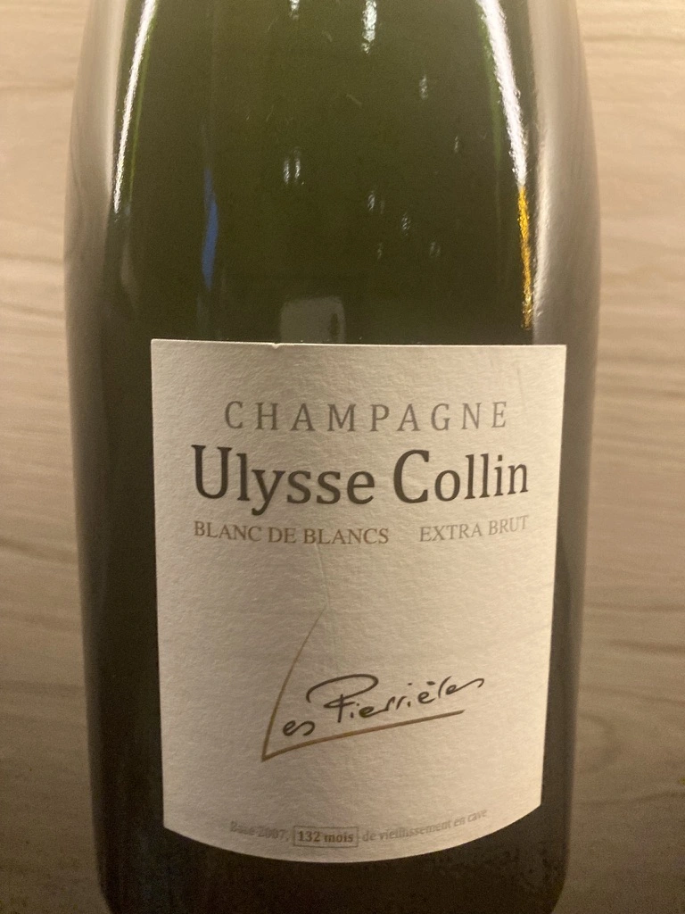
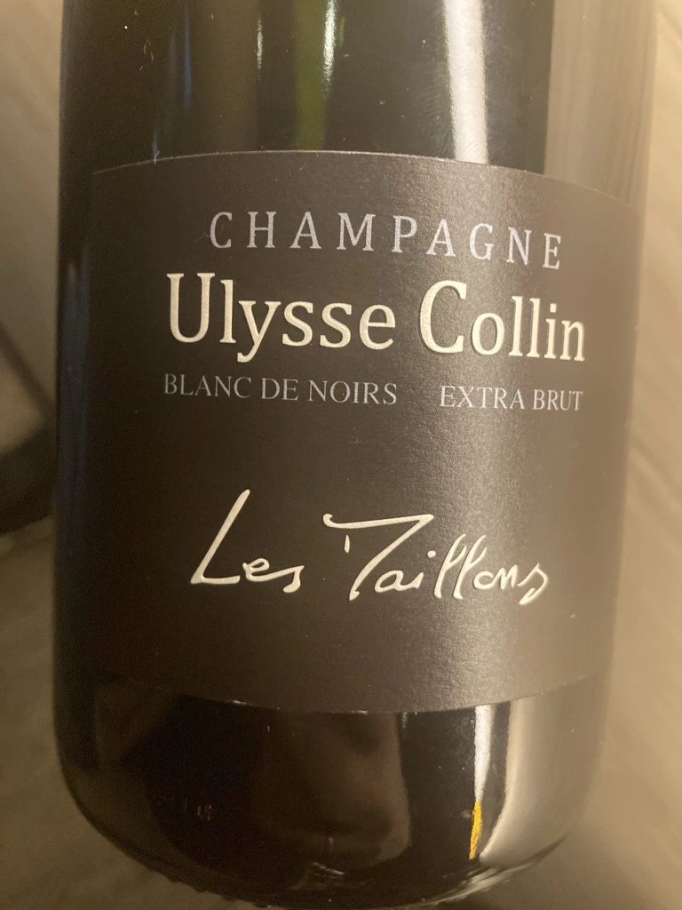
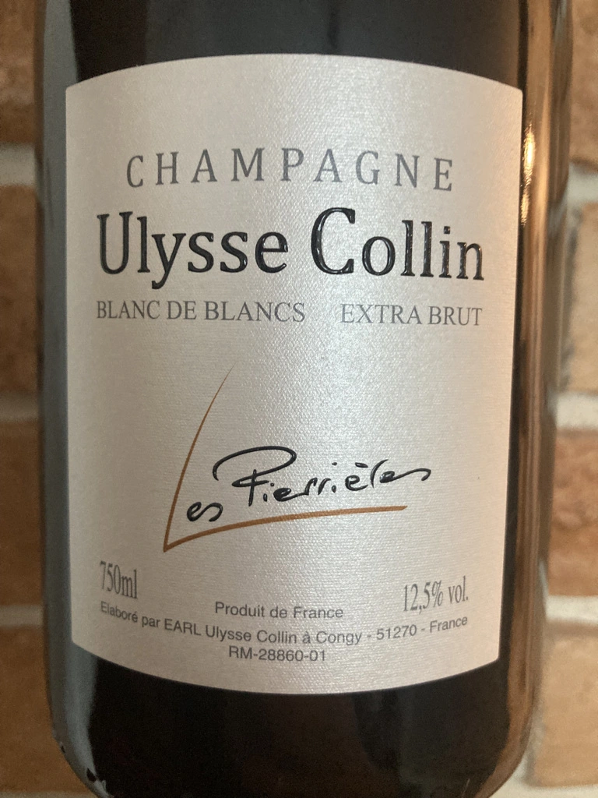
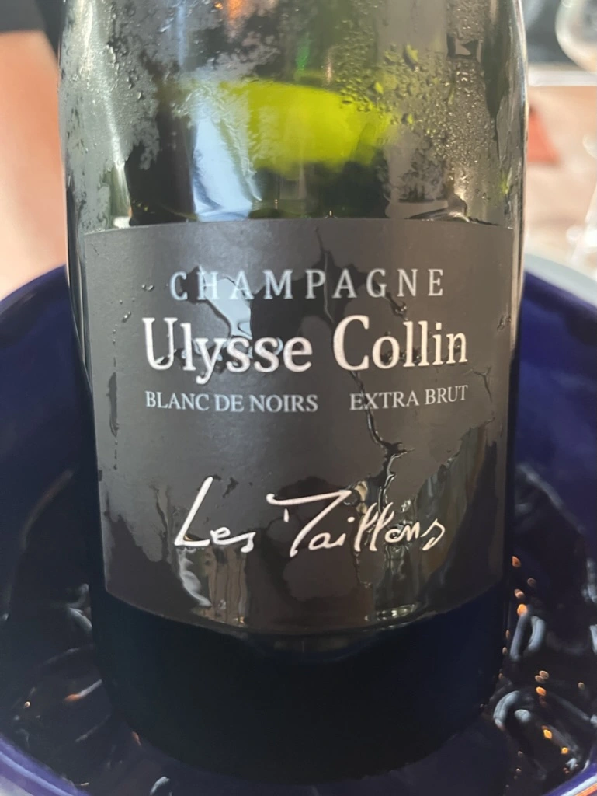
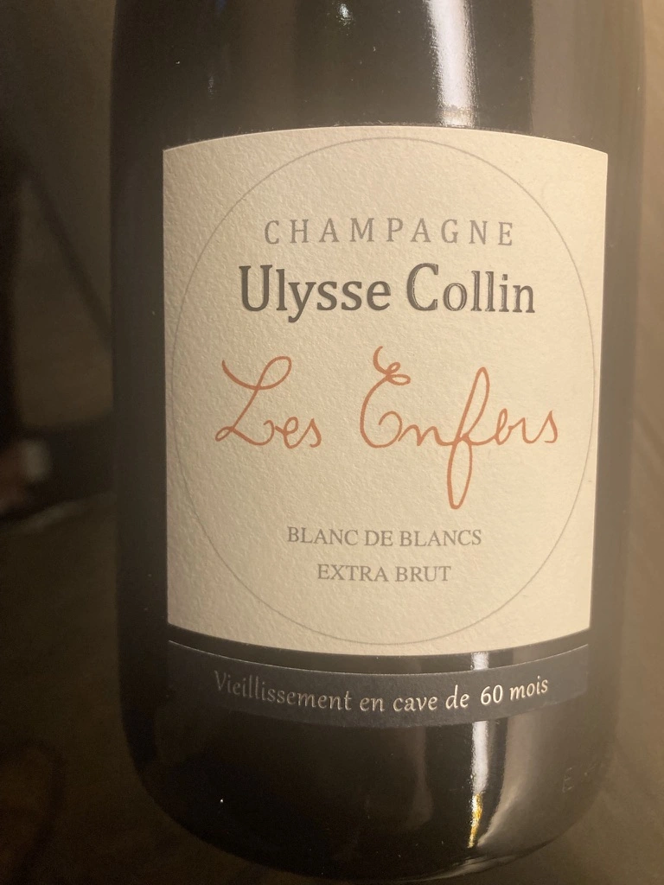
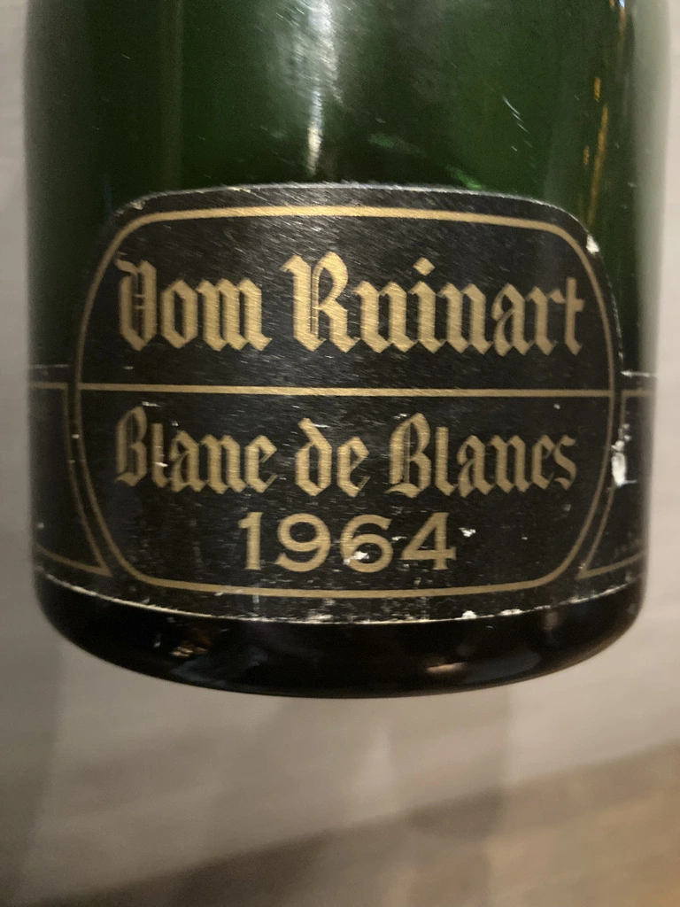

- Type
- White Sparkling, Extra brut
- Producer
- Ulysse Collin
- Vintage
- NV
- Location
- France, Champagne AOC
- Grapes
- Chardonnay
- Alcohol
- 1
- Sugar
- NA
- Price
- 4900 UAH
- Cellar
- N/A
65-year-old Chardonnay have southern exposure and are planted on soft clay and silex topsoils over limestone. The fruit is hand-harvested, the clusters destemmed and the grapes gently pressed; the juice is fermented spontaneously and slowly (up to six months) with natural yeasts in mainly-used Burgundy barrels. Reserve wines are held in foudres and tonneaux. The wine is bottled without fining or filtering and aged for 48 months.
Producer
Ulysse Collin is a legendary Champagne producer based in Congy. Owned by the family that actively growth vines since 1812 in Coteaux du Petit Morin (located in Marne but south of the Grand Crus in the Côte des Blancs). These days Olivier stands behind the name.
In 1987 Oliver’s father stopped independent production of wines and started renting family’s vines to big Champagne houses. As young student, Oliver took a trip to Burgundy, where he was amazed by wines from Côte de Beaune, especially by singularity of the various climats. So he decided to reclaim vieyards back from big négociant.
In 2003 recovered 4.5 hectares and started working on restoring the soils and vines. The year was tough, so he didn’t produce any wine that year and simply sold everything. But in 2004 he started his production from Chardonnay which resulted in 5400 bottles released in the future.
In 2005 Olivier got back an additional 4.2 hectares of vines. And the second Champagne was made in 2006, this time a Blanc de Noirs.
Plots:
- Les Pierrières, 1.2 hectares, 40 years old vines. Shallow, poor topsoil 10 to cm deep over the rocky subsoil of soft chalk with carbonated silex or Onyx.
- Les Maillons, 2 hectares, near the town of Sézanne in the coteaux du Sézannais. Clays rich in iron.
- Les Enfers.
So far produces 6 distinct wines (each one from a singe vineyard):
- Blanc de Blancs Les Pierrières (first vintage is 2004)
- Blanc de Blancs Les Roises (first vintage is 2008)
- Blanc de Blancs Les Enfers (first vintage is 2010)
- Blanc de Noirs Les Maillons (first vintage is 2006)
- Rose Les Maillons (first vintage is 2011)
- Jardin d’Ulysse (first vintage is 015)
Ratings
2021-09-06 - 9.00
Tasted as a part of Ulysse Collin dinner in 101 Bar.
I could not guess the grape here. Very interesting Chardonnay, unique and stylish. Based on 2015, 60 months on lees. Expressive and opulent bouquet: oil, toast, apple seeds, hay, hazelnut. Vinous, complex and well balanced. Still young. Giving extra point for unique result (at least in my experience).
Related





